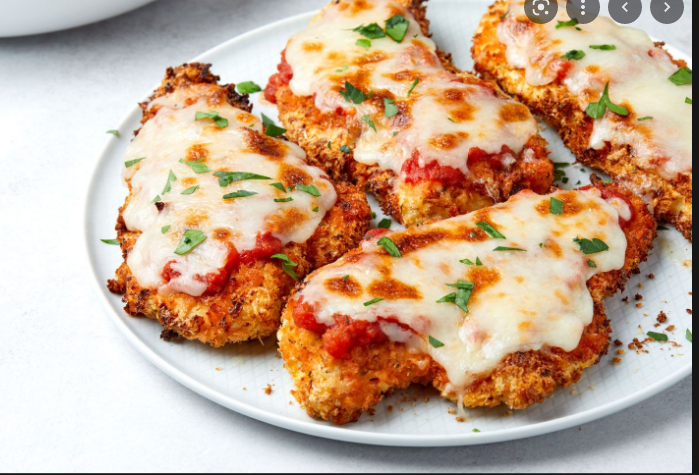

Chicken Parmesan

Crispy Chicken Parmesan
This recipe pan fries chicken breast breaded with panko bread crumbs
to ensure a crunchy exterior but a juicy and fully cooked interior.
While there are a few spices in this recipe, for the most part they
are soley personal preference, and you are free to use whatever you wish.
Ingredients
- Chicken Breast
- Flour
- Salt
- Pepper
- Eggs
- Panko Bread Crumbs
- Smoked Paprika
- Parmesan
Steps
- Pre-heat your oven to 325 degrees Farenheit
- Butterfly the Chicken Breasts so they are thin
- Lightly season the chicken with salt (salt will be going in several things so don't go overboard!
- Set up your working station so you have a container that has flour, one that has egg wash and one that has bread crumbs with seasoning
All of these containers will ahve salt and pepper seasoned in them, the bread crumbs also having the smoked paprika and some Parmesan
- Fully cover your chicken breasts in the containers in the order of flour -> egg -> bread crums. Make sure to shake off excess
- Cook the chicken in a pan with some oil on medium for 2-3 minutes on each side, enough to get golden brown (add in butter halfway in)
- Top the parm with some mozarella and more parmesan (maybe some marinara sauce as well) and put in the oven
- Take chicken out when it reaches 165 Degrees Farenheit internal temperature, and enjoy!
Main Page